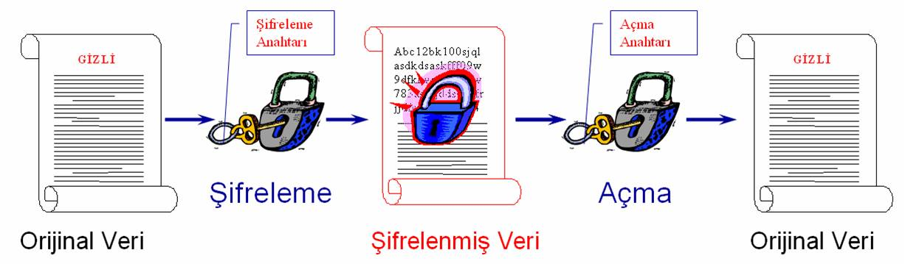

6.8.
Kriptografi Algoritmaları

Şifreleme ve açma işlemlerinde kullanılan anahtarların birbiriyle olan ilişkilerine bağlı olarak, iki tür şifreleme algoritması vardır:
Simetrik (Gizli Anahtarlı) Şifreleme Algoritmaları,
Asimetrik (Açık Anahtarlı) Şifreleme Algoritmaları.
Günümüzün popüler kriptosistemleri bu iki sistemin beraber kullanılmasıyla oluşan hibrit sistemlerdir.